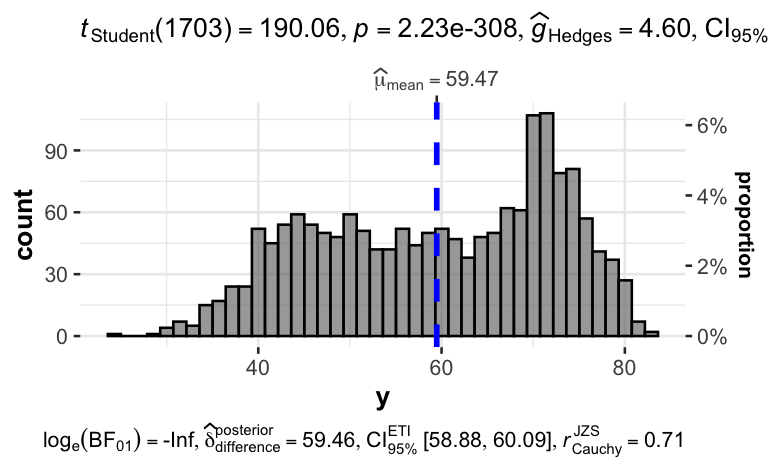
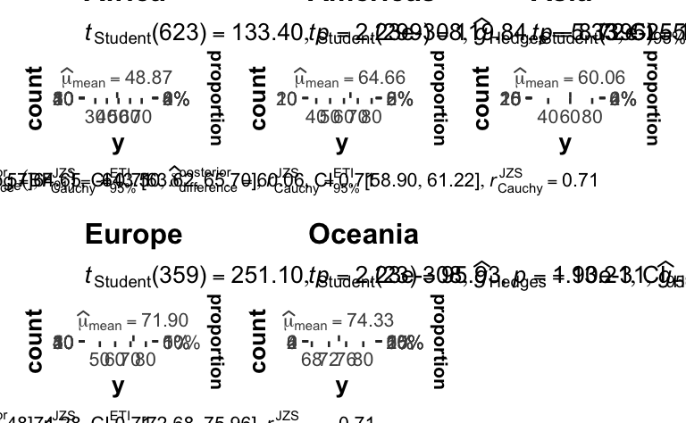
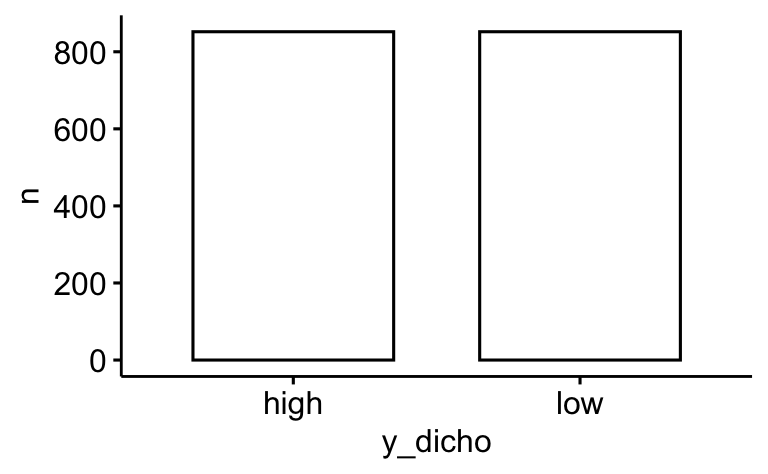
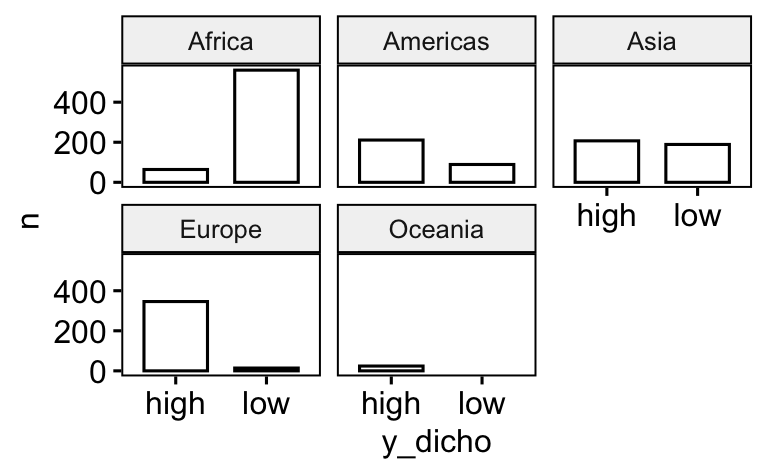
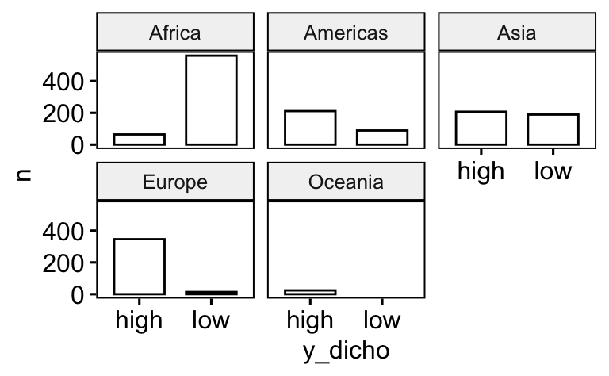
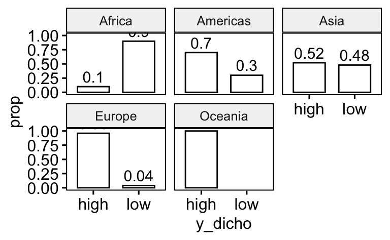

Aufgabe
In dieser Fallstudie (YACSDA: Yet another Case Study on Data Analysis) untersuchen wir den Datensatz gapminder.
Sie können den Datensatz so beziehen:
Oder so:
Ein Codebook finden Sie hier.
Die Forschungsfrage lautet:
Was ist der Einfluss des Kontinents und des Bruttosozialprodukts auf die Lebenswartung?
- Abhängige Variable (metrisch),
y: Lebenserwartung - Unabhängige Variable 1 (nominal),
x1: Kontinent - Unabhängige Variable 2 (metrisch),
x2: Bruttosozialprodukt
Visualisieren Sie dazu folgende Aspekte der Forschungsfrage!
Aufgaben
- Visualisieren Sie die Verteilung von
yauf zwei verschiedene Arten. - Fügen Sie relevante Kennzahlen zur letzten Visualisierung hinzu.
- Visualisieren Sie die Verteilung von
x1undx2. - Visualisieren Sie die Verteilung von
ybedingt aufx1. - Fügen Sie relevante Kennzahlen zur letzten Visualisierung hinzu.
- Visualisieren Sie den Zusammenhang von
yundx2. - Verbessern Sie das letzte Diagramm, so dass es übersichtlicher wird.
- Fügen Sie dem letzten Diagramm relevante Kennzahlen hinzu.
- Fügen Sie dem Diagramm zum Zusammenhang von
yundx2eine Regressionsgerade hinzu. - Ersetzen Sie die Regressionsgerade durch eine LOESS-Gerade.
- Gruppieren Sie das letzte Diagramm nach
x1. - Dichotomisieren Sie
yund zählen Sie die Häufigkeiten. Achtung: Dichotomisieren wird von einigen Statistikern mit Exkommunikation bestraft. Proceed at your own risk. - Gruppieren Sie das letzte Diagramm nach den Stufen von
x1. - Variieren Sie das letzte Diagramm so, dass Anteile (relative Häufigkeiten) statt absoluter Häufigkeiten gezeigt werden.
Hinweise:
- Orientieren Sie sich im Übrigen an den allgemeinen Hinweisen des Datenwerks.
Lösung
Pakete starten
Los geht’s
Zur einfacheren Verarbeitung nenne ich die Variablen um:
Umbenennen
Visualisieren Sie die Verteilung von y auf zwei verschiedene Arten.
Das R-Paket ggpubr erstellt schöne Diagramme (basierend auf ggplot) auf einfache Art. Nehmen wir ein Dichtediagramm; die Variable y soll auf der X-Achse stehen:
Beachten Sie, dass die Variable in Anführungsstriche gesetzt werden muss: x = "y".
Oder ein Histogramm:
Warning: Using `bins = 30` by default. Pick better value with the argument
`bins`.Fügen Sie relevante Kennzahlen zur letzten Visualisierung hinzu.
Um Diagramme mit Statistiken anzureichen, bietet sich das Paket ggstatsplot an:

Beachten Sie, dass die Variable nicht in Anführungsstriche gesetzt werden darf: x = y.
Visualisieren Sie die Verteilung von x1 und x2.
x1
x2
Visualisieren Sie die Verteilung von y bedingt auf x1
Warning: Using `bins = 30` by default. Pick better value with the argument
`bins`.Oder so:
Warning: Using `bins = 30` by default. Pick better value with the argument
`bins`.Fügen Sie relevante Kennzahlen zur letzten Visualisierung hinzu

Visualisieren Sie den Zusammenhang von y und x2
Verbessern Sie das letzte Diagramm, so dass es übersichtlicher wird
Es gibt mehrere Wege, das Diagramm übersichtlicher zu machen. Logarithmieren ist ein Weg.

Synonym könnten wir schreiben:
Fügen Sie dem letzten Diagramm relevante Kennzahlen hinzu
Fügen Sie dem Diagramm zum Zusammenhang von y und x2 eine Regressionsgerade hinzu
Ersetzen Sie die Regressionsgerade durch eine LOESS-Gerade
Gruppieren Sie das letzte Diagramm nach x1

Dichotomisieren Sie y und zählen Sie die Häufigkeiten
Nehmen wir einen Mediansplit, um zu dichotomisieren.

Gleich viele! Das sollte nicht verwundern.
Gruppieren Sie das letzte Diagramm nach den Stufen von x1
# A tibble: 9 × 3
y_dicho x1 n
<chr> <fct> <int>
1 high Africa 64
2 high Americas 211
3 high Asia 207
4 high Europe 346
5 high Oceania 24
6 low Africa 560
7 low Americas 89
8 low Asia 189
9 low Europe 14
Variieren Sie das letzte Diagramm so, dass Anteile (relative Häufigkeiten) statt absoluter Häufigkeiten gezeigt werden
# A tibble: 9 × 4
y_dicho x1 n prop
<chr> <fct> <int> <dbl>
1 high Africa 64 0.04
2 high Americas 211 0.12
3 high Asia 207 0.12
4 high Europe 346 0.2
5 high Oceania 24 0.01
6 low Africa 560 0.33
7 low Americas 89 0.05
8 low Asia 189 0.11
9 low Europe 14 0.01Check:
# A tibble: 1 × 1
`sum(prop)`
<dbl>
1 0.99Gut! Die Anteile summieren sich zu ca. 1 (100 Prozent).
Man beachten, dass sich die Anteile auf das “Gesamt-N” beziehen.
Vielleicht möchten wir die Anteile lieber pro Stufe von x1 beziehen. Dazu gruppieren wir nach (und pro Stufe von) x1.
# A tibble: 9 × 4
# Groups: x1 [5]
y_dicho x1 n prop
<chr> <fct> <int> <dbl>
1 high Africa 64 0.1
2 high Americas 211 0.7
3 high Asia 207 0.52
4 high Europe 346 0.96
5 high Oceania 24 1
6 low Africa 560 0.9
7 low Americas 89 0.3
8 low Asia 189 0.48
9 low Europe 14 0.04
Categories:
- vis
- yacsda
- ggquick
- gapminder
- string